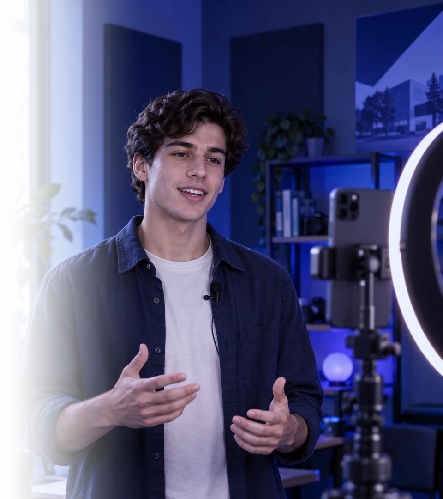
Creación de Contenidos Digitales · Semana 10
Producción audiovisual
Planos, ángulos, composición, iluminación y grabación: del storyboard a la toma
Recurso educativo de creación propia
Ruta de la sesión
90 minutos, del storyboard a la toma
| Minuto | Momento | Producto |
|---|---|---|
| 0–5 | Apertura: el mismo momento, dos grabaciones | Pregunta detonante |
| 5–20 | Planos: la escala del encuadre | Siete planos y su intención |
| 20–30 | Ángulos y movimientos de cámara | Punto de vista del relato |
| 30–40 | Composición | Encuadres con intención |
| 40–50 | Iluminación con recursos caseros | Esquema de tres puntos |
| 50–58 | Celular, audio, continuidad y ética | Lista de chequeo de rodaje |
| 58–90 | Práctica de grabación y cierre | Tomas del reto grabadas |
Creación de Contenidos Digitales
Resultados de aprendizaje
Al terminar la sesión, cada equipo podrá…
Elegir
el plano, el ángulo y la composición que mejor sirven a la intención de cada escena.
Controlar
la luz y el sonido con recursos al alcance: ventana, lámpara, cartulina y el micrófono del celular.
Grabar
las tomas de su reto siguiendo el storyboard, con roles, continuidad y consentimiento.
Creación de Contenidos Digitales
Apertura · 4 minutos
El mismo momento, grabado dos veces. ¿Cuál publicarían?
Grabación A
Celular en vertical, a la altura del pecho
La ventana detrás de la persona
Un solo plano general fijo durante 40 s
Audio desde lejos, con eco del salón
Grabación B
Celular en horizontal, a la altura de los ojos
La ventana iluminando el rostro de lado
Plano medio, un detalle de las manos y un primer plano
Celular a un metro de quien habla, en un rincón con cortinas
Planos · 15 minutos
El plano es la palabra del lenguaje audiovisual
Un plano es lo que la cámara registra entre un corte y el siguiente. Su escala decide cuánto del sujeto ve la audiencia y, con eso, qué siente.
Alejarse
muestra el contexto: dónde estamos y con quién
Acercarse
muestra la emoción: qué siente el personaje
Creación de Contenidos Digitales
Escala de planos
Siete planos, del paisaje a la mirada
1. Gran plano general
2. Plano general
3. Plano americano
4. Plano medio
5. Primer plano
6. Primerísimo primer plano
7. Plano detalle
Regla práctica
Más lejos, más contexto. Más cerca, más emoción.
Creación de Contenidos Digitales
Escala de planos · 1 de 7
Gran plano general
Qué muestra
El lugar completo: la persona es apenas un punto en el paisaje.
Qué comunica
Ubicación, escala y, a veces, soledad.
En los retos
Abrir «Mi barrio a las 6 a. m.» o «El último bus».
Consejo: sosténganlo de 4 a 6 segundos; la audiencia necesita tiempo para leer el lugar.
Creación de Contenidos Digitales
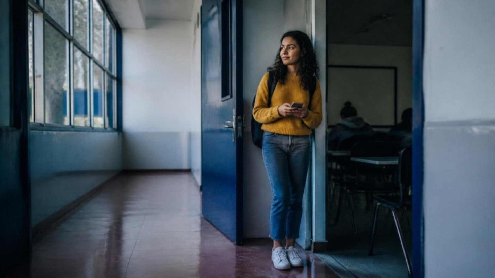
Escala de planos · 2 de 7
Plano general
Qué muestra
La persona completa, de la cabeza a los pies, dentro de su entorno.
Qué comunica
La acción completa en su espacio.
En los retos
El personaje entra al salón en «Primer día en la U».
Consejo: dejen aire sobre la cabeza y bajo los pies; un plano general con los pies cortados parece un error.
Creación de Contenidos Digitales
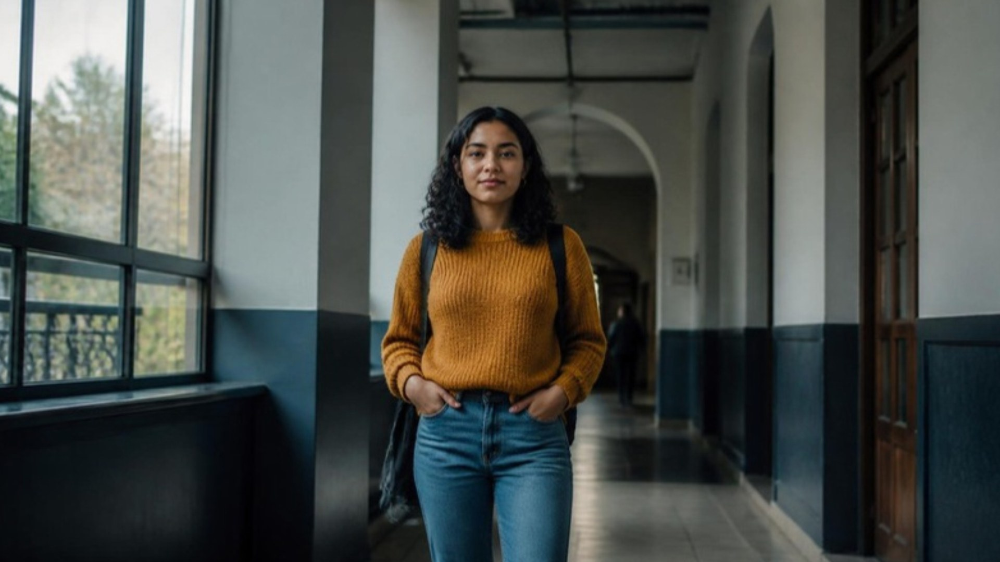
Escala de planos · 3 de 7
Plano americano
Qué muestra
La persona desde las rodillas o los muslos hacia arriba.
Qué comunica
Actitud y lenguaje corporal: postura, manos, seguridad.
En los retos
La espera antes de «La entrevista de trabajo».
Consejo: corten a media pierna, nunca justo en una articulación como la rodilla o el tobillo.
Creación de Contenidos Digitales
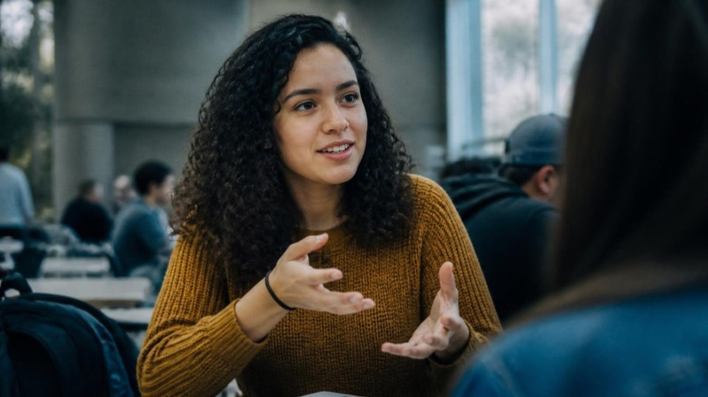
Escala de planos · 4 de 7
Plano medio
Qué muestra
La persona de la cintura hacia arriba, con sus gestos.
Qué comunica
Conversación y cercanía social: la distancia de una charla.
En los retos
La entrevista de «Detrás del mostrador».
Consejo: es el plano base de una entrevista; dejen aire de mirada hacia la persona con la que habla.
Creación de Contenidos Digitales
Escala de planos · 5 de 7
Primer plano
Qué muestra
El rostro y los hombros.
Qué comunica
Emoción y reacción: lo que el personaje siente.
En los retos
Leer la respuesta en «El mensaje que no envié».
Consejo: el foco va en los ojos; toquen el rostro en la pantalla para fijarlo.
Creación de Contenidos Digitales
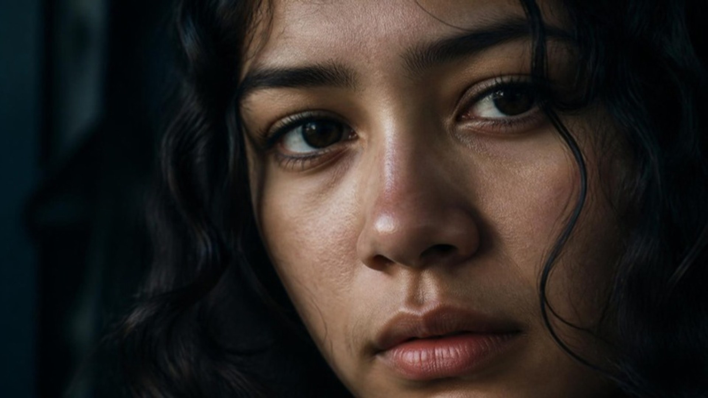
Escala de planos · 6 de 7
Primerísimo primer plano
Qué muestra
El rostro llena el cuadro, de la frente al mentón.
Qué comunica
Intimidad y tensión: no hay dónde más mirar.
En los retos
La mirada justo antes de decidir enviar el mensaje.
Consejo: úsenlo poco; su fuerza depende de que sea excepcional.
Creación de Contenidos Digitales
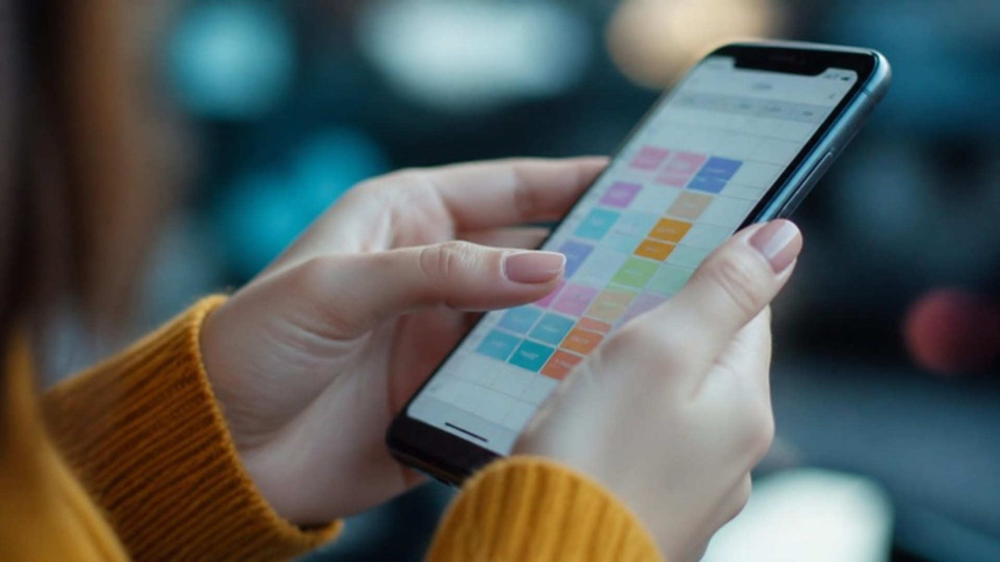
Escala de planos · 7 de 7
Plano detalle
Qué muestra
Un objeto o un gesto que ocupa todo el cuadro.
Qué comunica
Información clave o un símbolo de la historia.
En los retos
Las manos amasando en «La receta de la abuela».
Consejo: acérquense físicamente o usen el modo macro; el zoom digital pixela.
Creación de Contenidos Digitales
Qué comunica cada plano
Cada plano tiene un trabajo en la historia
| Plano | Qué comunica | Ejemplo en un reto |
|---|---|---|
| Gran plano general | Ubicación, escala, soledad | El barrio a las 6 a. m. |
| Plano general | Acción completa en su espacio | El personaje entra al salón |
| Plano americano | Actitud y lenguaje corporal | Espera nervioso la entrevista |
| Plano medio | Conversación, cercanía social | Entrevista del minidocumental |
| Primer plano | Emoción y reacción | Lee el mensaje que no envió |
| Primerísimo primer plano | Tensión, intimidad | La mirada antes de decidir |
| Plano detalle | Un objeto o gesto clave | Las manos amasando la receta |
Creación de Contenidos Digitales
Pregunta · Planos
«Primer día en la U»: el personaje descubre que entró al salón equivocado. ¿Qué secuencia de tres planos lo cuenta mejor?
A
Primer plano (cara de desconcierto) · plano general (el salón lleno de desconocidos) · plano detalle (el número de la puerta)
B
Plano general (entra) · plano detalle (el horario en el celular) · primer plano (sorpresa)
C
Plano general (entra y saluda) · plano medio (se sienta) · primer plano (sorpresa)
Respuesta: B y A funcionan. B ordena contexto, información y reacción; A invierte el orden y crea intriga. C muestra la sorpresa, pero nunca su causa.
Creación de Contenidos Digitales
Ángulos y movimientos · 10 minutos
Dónde pongo la cámara cambia lo que siento
Picado
Desde arriba: vulnerabilidad, pequeñez
Contrapicado
Desde abajo: poder, admiración
Normal
A los ojos: neutralidad, empatía
Cenital
Desde el techo: orden, mapa, recetas
Nadir
Desde el suelo: sorpresa, extrañeza
Holandés
Inclinado: desequilibrio, tensión
Creación de Contenidos Digitales
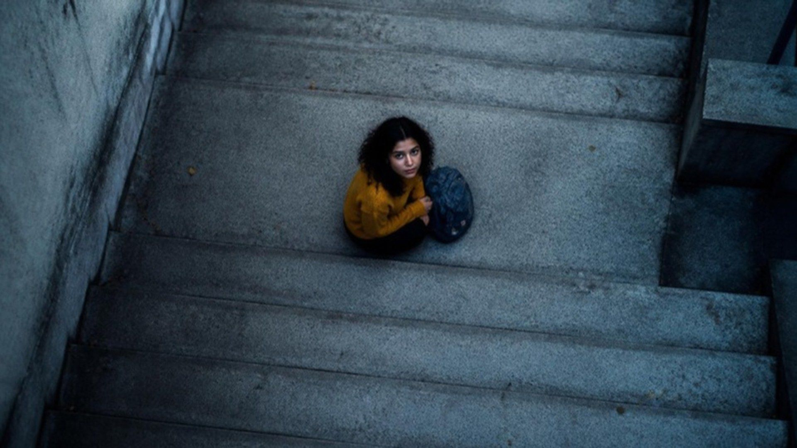
Ángulos · 1 de 6
Picado
Dónde va la cámara
Por encima de los ojos, mirando hacia abajo.
Qué comunica
Vulnerabilidad, pequeñez, soledad.
En los retos
El estudiante perdido en «Primer día en la U».
Consejo: un picado leve basta; uno exagerado se vuelve caricatura.
Creación de Contenidos Digitales
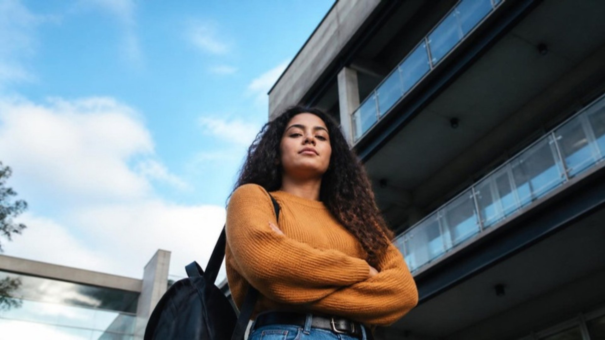
Ángulos · 2 de 6
Contrapicado
Dónde va la cámara
Por debajo de los ojos, mirando hacia arriba.
Qué comunica
Poder, seguridad, admiración.
En los retos
El objeto perdido visto por quien lo encuentra, o un personaje que se transforma.
Consejo: el cielo se quema fácil; bloqueen la exposición sobre el rostro.
Creación de Contenidos Digitales
Ángulos · 3 de 6
Normal
Dónde va la cámara
A la altura de los ojos del personaje.
Qué comunica
Neutralidad, empatía, trato de igual a igual.
En los retos
Las entrevistas de los minidocumentales.
Consejo: es el ángulo base; si una persona está sentada, bajen el celular a sus ojos, no a los suyos.
Creación de Contenidos Digitales
Ángulos · 4 de 6
Cenital
Dónde va la cámara
Justo encima de la escena, mirando en vertical hacia abajo.
Qué comunica
Orden, mapa, proceso paso a paso.
En los retos
«La receta de la abuela» y «Hecho en Santander».
Consejo: nivelen el celular con la cuadrícula y eviten que su sombra caiga sobre la mesa.
Creación de Contenidos Digitales
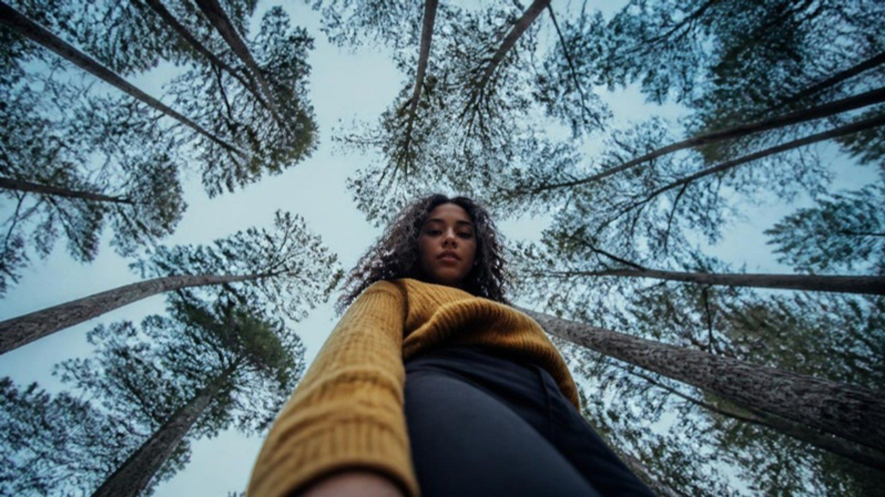
Ángulos · 5 de 6
Nadir
Dónde va la cámara
En el suelo, mirando en vertical hacia arriba.
Qué comunica
Sorpresa, extrañeza, un mundo que se ve enorme.
En los retos
El punto de vista del objeto caído en «El objeto perdido».
Consejo: protejan el celular con la funda o un trapo en el piso y usen el gran angular si lo tiene.
Creación de Contenidos Digitales
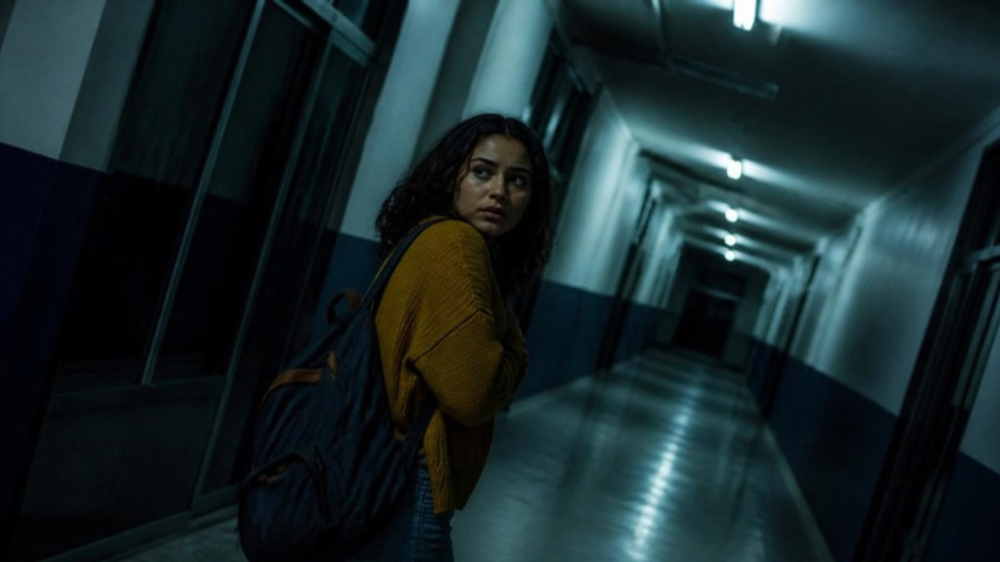
Ángulos · 6 de 6
Holandés
Dónde va la cámara
A cualquier altura, pero inclinada sobre su eje.
Qué comunica
Desequilibrio, tensión, inquietud.
En los retos
La angustia de «La noche antes del parcial».
Consejo: un plano inclinado tiene fuerza; un video entero inclinado la pierde.
Creación de Contenidos Digitales
Pregunta · Ángulos
«La entrevista de trabajo»: queremos que el entrevistador intimide. ¿Desde dónde lo grabamos?
A
En picado, desde arriba de su cabeza
B
En cenital, desde el techo sobre el escritorio
C
En contrapicado leve, desde la altura del candidato sentado
Respuesta: la C. El contrapicado lo engrandece y, además, adopta el punto de vista del candidato.
Creación de Contenidos Digitales
Movimientos con celular
Mover la cámara solo cuando el movimiento cuenta algo
| Movimiento | Cómo hacerlo con celular | Para qué sirve |
|---|---|---|
| Fijo | Trípode, pila de libros o celular apoyado en la pared | Entrevistas, diálogos, calma |
| Paneo | Girar el cuerpo desde la cintura, lento y con inicio y final quietos | Revelar un espacio o seguir una mirada |
| Travelling | Caminar con pasos cortos, rodillas flexionadas, celular con las dos manos | Acompañar al personaje, inmersión |
| Acercamiento | Acercarse caminando, no con zoom digital | Dar énfasis a una emoción o un objeto |
| Cámara en mano | Movimiento leve e intencional, con estabilizador activado | Urgencia, documental, nervios |
Creación de Contenidos Digitales
Composición · 10 minutos
Componer es decidir dónde mira la audiencia
1 · Regla de tercios
Ojos o sujeto sobre una línea o un cruce, no en el centro exacto.
2 · Aire de mirada
Más espacio libre hacia donde mira o camina el personaje.
3 · Líneas guía
Piso, ventanas y techo llevan la vista al sujeto.
4 · Fondo limpio
Nada que distraiga o salga de la cabeza del personaje.
Creación de Contenidos Digitales
Pregunta · Composición · Toma A
¿Qué le cambiarían a esta toma?
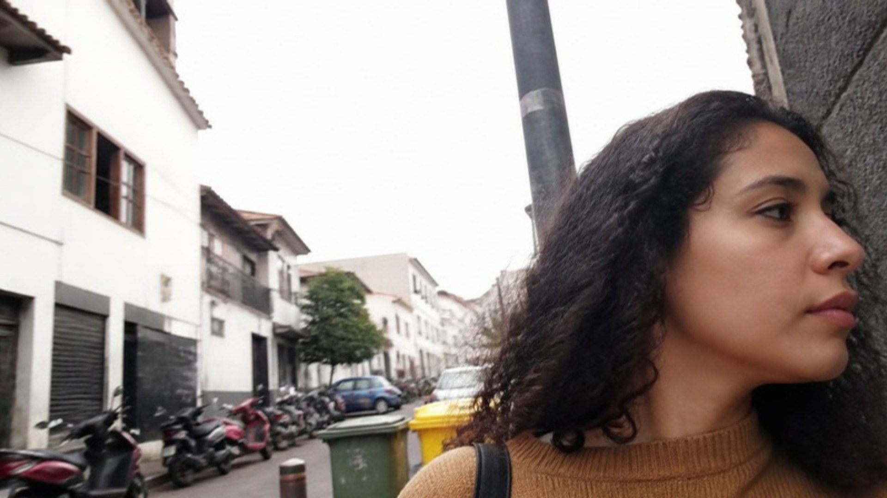
Creación de Contenidos Digitales
Composición · Toma A y toma B
La misma persona, cinco decisiones distintas
Toma A · con errores
Toma B · corregida
Creación de Contenidos Digitales
Iluminación · 10 minutos
La luz también narra: seis decisiones antes de grabar
Ventana
La mejor luz gratuita. Que ilumine el rostro de frente o de lado, nunca desde atrás.
Dura o suave
Sol directo marca sombras y tensión; una cortina o un día nublado suavizan y acercan.
Contraluz
Luz detrás del sujeto: silueta. Es un recurso si se decide y un error si no.
Hora dorada
Primera y última hora de sol: luz cálida, baja y suave, ideal para exteriores.
Temperatura
No mezclar bombillo cálido con ventana fría en el mismo rostro: apaguen una.
Exposición
Toquen el rostro en la pantalla, bajen el brillo un poco y bloqueen enfoque y exposición.
Creación de Contenidos Digitales
Esquema de tres puntos · El montaje
Tres luces profesionales con recursos de casa
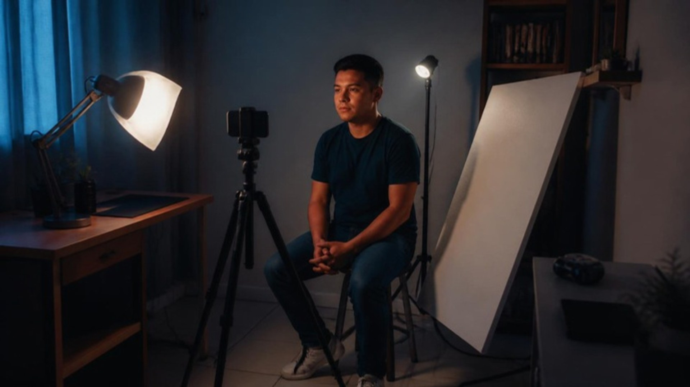
Principal
Lámpara con difusor o ventana, a 45° del rostro y un poco por encima.
Relleno
Plancha o cartulina blanca al otro lado: rebota luz y suaviza la sombra.
Contraluz
Lámpara pequeña detrás, que separa a la persona del fondo.
Cámara
Celular en trípode, al frente y a la altura de los ojos.
Creación de Contenidos Digitales
Esquema de tres puntos · El resultado
Así se ve cada luz en el rostro
Principal: da volumen; un lado del rostro está más iluminado que el otro.
Relleno: la sombra existe, pero no se come la mitad de la cara.
Contraluz: un borde de luz en el cabello y los hombros lo despega del fondo.
Brillo en los ojos: señal de una fuente suave frente al rostro.
Creación de Contenidos Digitales
Pregunta · Iluminación
«Detrás del mostrador»: el rostro del tendero sale oscuro y la vitrina de atrás, quemada. ¿Qué hacen?
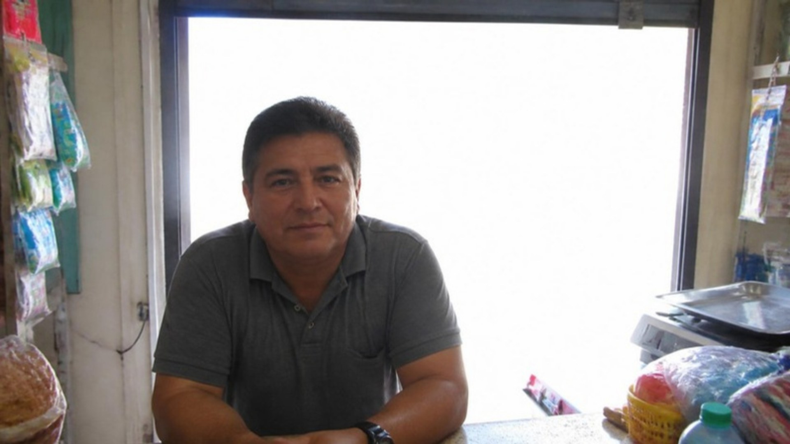
A. Tocar el rostro en la pantalla para exponer por él y bloquear la exposición
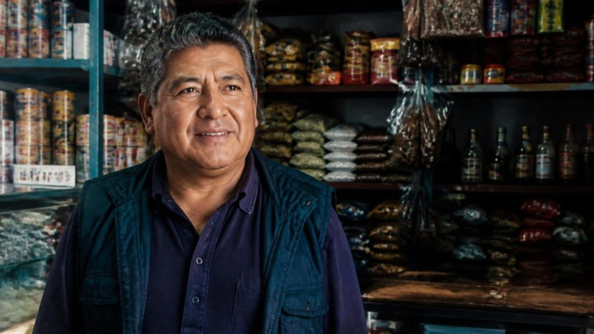
B. Cambiar la posición: la luz de la vitrina de lado al rostro y la cámara de espaldas a ella
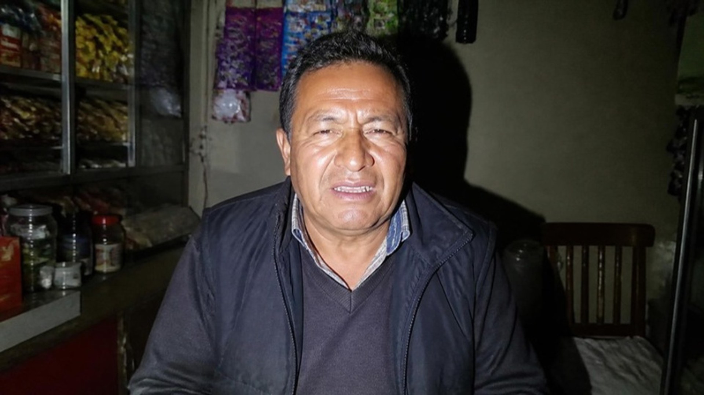
C. Encender la linterna de otro celular directo a la cara
Respuesta: la B. La A salva el rostro, pero la vitrina queda blanca y se pierde el lugar; la C aplana la cara. Moverse resuelve las dos cosas.
Creación de Contenidos Digitales
Grabar con celular · 8 minutos
Ocho ajustes antes de presionar grabar
Lente limpio con un paño o la camiseta
Modo avión o no molestar: sin llamadas en plena toma
Batería y espacio: un minuto en 1080p ocupa unos 100 MB
Orientación según el canal: horizontal 16:9 o vertical 9:16
1080p a 30 cps; 60 si habrá cámara lenta
Cuadrícula activada para aplicar los tercios
Sin zoom digital: acercarse con los pies
Enfoque y exposición bloqueados sobre el sujeto
Creación de Contenidos Digitales
Audio con celular
La audiencia perdona una imagen regular; un mal audio, no
Cerca de la boca
Entre 20 y 40 cm del micrófono. Lejos, la voz se llena de sala.
Segundo celular
Uno graba imagen; otro, cerca, graba la voz como nota de voz.
Una palmada
Al iniciar cada toma: marca el punto para sincronizar audio y video.
Sin eco
Cortinas, ropa, cojines. Un clóset lleno es una cabina de voz.
Ambiente de sala
10 segundos de silencio del lugar para tapar cortes en la edición.
Con audífonos
Escuchen cada toma antes de pasar a la siguiente.
Creación de Contenidos Digitales
Continuidad y cobertura
Grabar pensando en la edición
Regla de los 5 segundos
Grabar 5 s antes de «acción» y 5 s después de terminar. Ese margen es el que permite cortar.
Plano y contraplano
En un diálogo, grabar la escena completa desde cada personaje y elegir en la edición.
Planos de recurso
Detalles del lugar, manos, objetos: tapan cortes y dan ritmo a entrevistas y voz en off.
Regla de los 180°
Una línea imaginaria une a quienes conversan; la cámara no la cruza o se invierten las miradas.
Continuidad: misma ropa, objetos en el mismo lugar y misma mano ocupada entre una toma y otra. Una foto del set antes de cortar lo resuelve.
Creación de Contenidos Digitales
Ética, permisos y accesibilidad
Producir bien también es producir con respeto
Consentimiento
Quien aparece o se escucha sabe para qué es y acepta. Grábenlo al inicio o fírmenlo.
Lugares y terceros
Pidan permiso en negocios y oficinas; eviten rostros reconocibles de desconocidos y de menores.
Música y sonidos con licencia
Bancos libres o Creative Commons, con la atribución que pida cada licencia en los créditos.
Subtítulos y transcripción
Subtítulos en todo video; transcripción para podcast y audiorrelato.
Inteligencia artificial: si la usan para voces, música, imágenes o edición, decláranlo en los créditos.
Creación de Contenidos Digitales
Práctica de grabación · 27 minutos
Su storyboard es el mapa. Hoy graban su reto
Min 58–62 · Fase 5
Plan de grabación
Ordenen las tomas por locación, no por el orden del guion, y repartan los roles.
Min 62–80 · Fase 6
Grabar
Mínimo tres tomas por plano clave. Los equipos de audio graban voces, efectos y ambientes.
Min 80–85 · Revisión
Ver y escuchar
Marquen las tomas buenas, anoten lo que falta y respalden todo en una carpeta compartida.
Espacios disponibles: el salón, los pasillos y las zonas comunes cercanas. Regresan al salón en el minuto 80.
Roles en el rodaje
Cuatro roles, nadie sobra
Dirección
Cuida que cada toma cuente lo del storyboard. Dice «acción» y «corte».
Cámara
Encuadre, ángulo, luz y ajustes del celular. Estabilidad en cada plano.
Sonido
Micrófono cerca, palmada al inicio, escucha con audífonos y pide repetir.
Script
Anota toma, plano y si sirve. Cuida la continuidad y toma foto del set.
Equipos de tres: dirección asume también el script. Todos actúan o ponen la voz cuando el guion lo pida.
Creación de Contenidos Digitales
Fase 7 · Montaje y entrega
Del rodaje a la entrega: un recurso de máximo 5 minutos
Qué entregan
1. Enlace al recurso final (2 a 5 minutos)
2. Guía completa: ficha, guiones y storyboard
3. Créditos con licencias y uso de IA
4. Consentimientos de quienes aparecen
5. Subtítulos o transcripción
Fecha de entrega: [definir]
Cómo se evalúa
| Criterio | Peso |
|---|---|
| Narrativa | 25 % |
| Guiones | 20 % |
| Storyboard | 15 % |
| Producción técnica | 20 % |
| Cumplimiento del reto | 10 % |
| Accesibilidad, ética y créditos | 10 % |
Editores gratuitos: CapCut, DaVinci Resolve o Canva para video; Audacity para audio.
Creación de Contenidos Digitales
Cierre · 5 minutos
¿Qué decisión de plano, luz o sonido cambió más una de sus tomas hoy?
La técnica no reemplaza la historia: la hace visible y audible. Cada decisión de cámara es una decisión narrativa.
Antes de la entrega
Completar las tomas pendientes · montar con las tomas buenas · créditos, licencias y subtítulos · máximo 5 minutos
Referencias
Para profundizar
- Bordwell, D., y Thompson, K. (1995). El arte cinematográfico: una introducción. Paidós.
- Brown, B. (2016). Cinematography: theory and practice (3.ª ed.). Routledge.
- Katz, S. D. (1991). Film directing shot by shot: visualizing from concept to screen. Michael Wiese Productions.
- Mascelli, J. V. (1965). The five C’s of cinematography. Cine/Grafic Publications.
- Mercado, G. (2011). The filmmaker’s eye: learning (and breaking) the rules of cinematic composition. Focal Press.
- Rodero, E. (2005). Producción radiofónica. Cátedra.
Creación de Contenidos Digitales